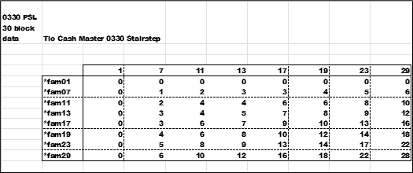
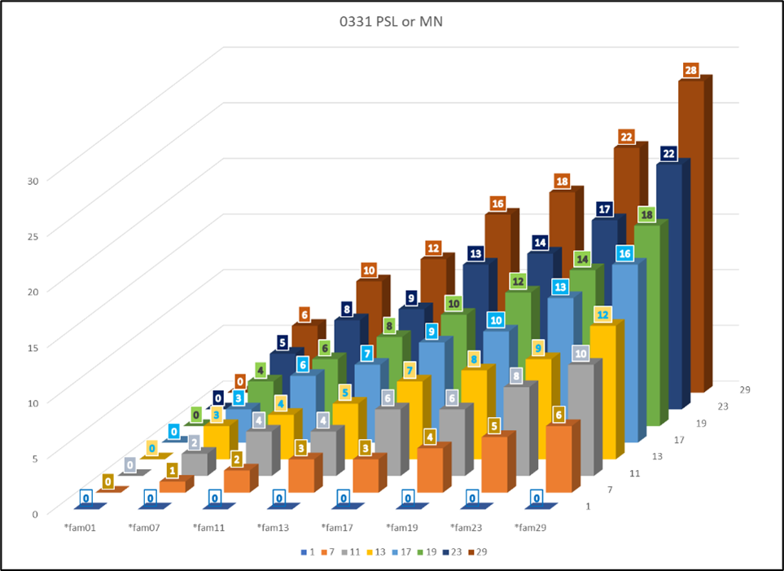
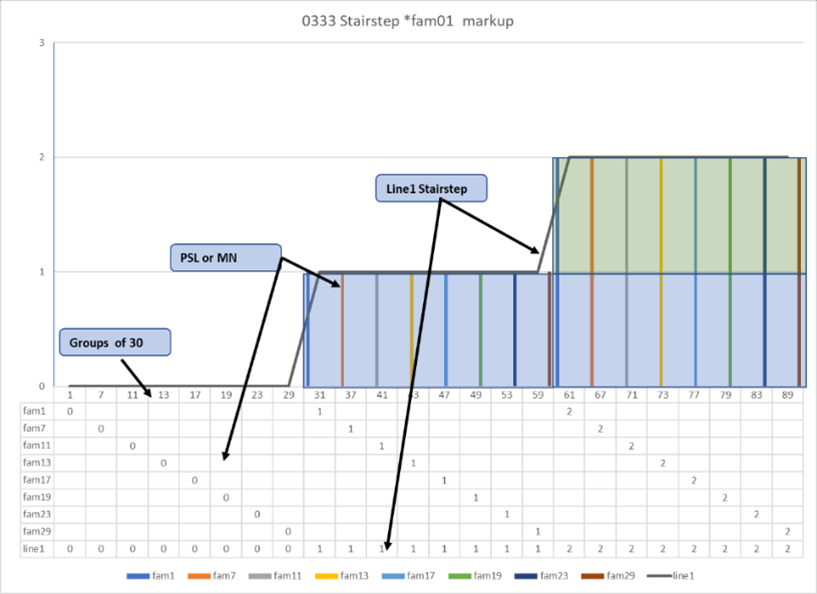
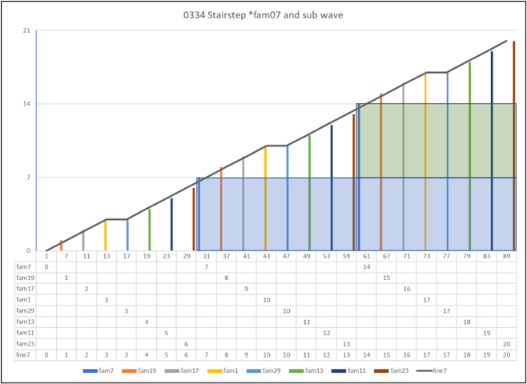

Look here
After looking at the *pairs and other data. The pattern of thirties is becoming clearer. Next is a set of charts and graphs to see the profile of a *fam line and the PSL from a side view. First , a 3d chart of all *fam with the PSL as a z value to show height.
This chart is the solution of the *fam and the PSL from the values in the below cells.
Again , for example , look at 22 in the last column or row.
*fam23 x 29 (23 x 29 =3D 667)
667 – 7 = 660
660 / 30 = 22
The long way , PS =3D 667 therefore *7 *wildcard.
Pick 07 or 17. 667 - *fam07 = 660. Divide by 30.
Equals 22 for the PSL or NM.
This is the 3d chart of the above data. The *fam is the x axis in front , and the y axis is on the right with only the values of the *fam. The z axis is the PSL or MN. The data values are the same color as the bars and the value is displayed. Note how the far right and far back columns the data value is one less than the *fam.
The next eight charts and graphs are a slice , or a sideways look , a 2d look of the same data. It will be data first then the graph second. But , will have three groups (g) of 30. Dissecting the data is easy , the PSL is the value in the cells with borders.
The graph is a little more work. First is the data chart at the bottom. The PSL or MN data for graph elements. Next is the group of 30’s. Finally , the bottom row of the data chart makes Line1 , it is the black line. The blue and green blocks are the stairstep the next (g). The profile of the tops is repeated in each block. For *fam01 it is flat. From *fam07 on look at the graph lines above the color blocks. It appears as a rough triangle with no color.
Look at the area under the line and above the colored blocks. Same profile for each group (g) of 30.
